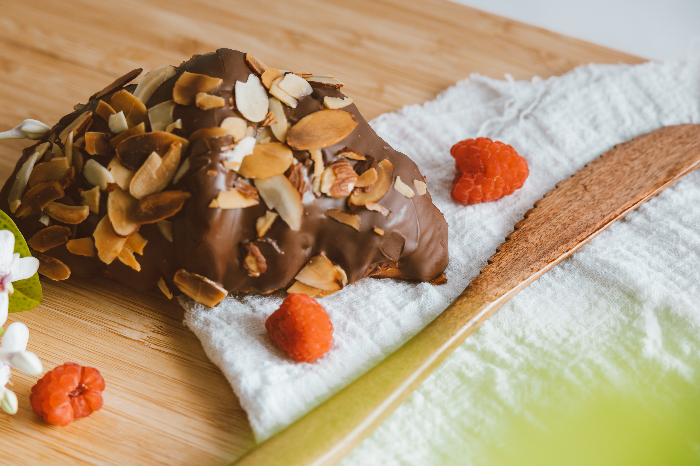

Start your day with croissant
ABOUT US
We have tried to collect the best articles in the world about the properties, benefits and how to cook croissants and provide you with their summary along with photos.Our mission is to introduce this pastry to the whole world
ARTICLES


